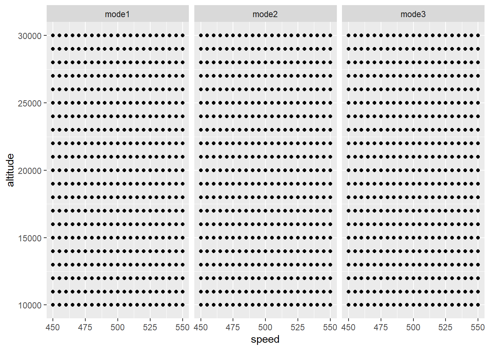

install.packages("skpr")
install.packages("tidyverse")skpr_workshop_live_demo
This document will help introduce
Installing Packages from The Comprehensive R Archive Network (CRAN)
Loading libraries
library(skpr)Loading required package: shinylibrary(tidyverse)── Attaching core tidyverse packages ──────────────────────── tidyverse 2.0.0 ──
✔ dplyr 1.1.1 ✔ readr 2.1.4
✔ forcats 1.0.0 ✔ stringr 1.5.0
✔ ggplot2 3.4.2 ✔ tibble 3.2.1
✔ lubridate 1.9.2 ✔ tidyr 1.3.0
✔ purrr 1.0.1 ── Conflicts ────────────────────────────────────────── tidyverse_conflicts() ──
✖ dplyr::filter() masks stats::filter()
✖ dplyr::lag() masks stats::lag()
ℹ Use the conflicted package (<http://conflicted.r-lib.org/>) to force all conflicts to become errorsCreating vectors
Creating numeric vectors with c() and seq()
altitudes_manual = c(100, 200, 300)
altitudes_manual[1] 100 200 300class(altitudes_manual)[1] "numeric"altitudes_colon = 1:200
altitudes_colon [1] 1 2 3 4 5 6 7 8 9 10 11 12 13 14 15 16 17 18
[19] 19 20 21 22 23 24 25 26 27 28 29 30 31 32 33 34 35 36
[37] 37 38 39 40 41 42 43 44 45 46 47 48 49 50 51 52 53 54
[55] 55 56 57 58 59 60 61 62 63 64 65 66 67 68 69 70 71 72
[73] 73 74 75 76 77 78 79 80 81 82 83 84 85 86 87 88 89 90
[91] 91 92 93 94 95 96 97 98 99 100 101 102 103 104 105 106 107 108
[109] 109 110 111 112 113 114 115 116 117 118 119 120 121 122 123 124 125 126
[127] 127 128 129 130 131 132 133 134 135 136 137 138 139 140 141 142 143 144
[145] 145 146 147 148 149 150 151 152 153 154 155 156 157 158 159 160 161 162
[163] 163 164 165 166 167 168 169 170 171 172 173 174 175 176 177 178 179 180
[181] 181 182 183 184 185 186 187 188 189 190 191 192 193 194 195 196 197 198
[199] 199 200altitudes_seq_by = seq(from = 100, to = 1000, by = 5)
altitudes_seq_by [1] 100 105 110 115 120 125 130 135 140 145 150 155 160 165 170
[16] 175 180 185 190 195 200 205 210 215 220 225 230 235 240 245
[31] 250 255 260 265 270 275 280 285 290 295 300 305 310 315 320
[46] 325 330 335 340 345 350 355 360 365 370 375 380 385 390 395
[61] 400 405 410 415 420 425 430 435 440 445 450 455 460 465 470
[76] 475 480 485 490 495 500 505 510 515 520 525 530 535 540 545
[91] 550 555 560 565 570 575 580 585 590 595 600 605 610 615 620
[106] 625 630 635 640 645 650 655 660 665 670 675 680 685 690 695
[121] 700 705 710 715 720 725 730 735 740 745 750 755 760 765 770
[136] 775 780 785 790 795 800 805 810 815 820 825 830 835 840 845
[151] 850 855 860 865 870 875 880 885 890 895 900 905 910 915 920
[166] 925 930 935 940 945 950 955 960 965 970 975 980 985 990 995
[181] 1000altitudes_seq_length = seq(from = 50, to = 1000, length.out = 20)
altitudes_seq_length [1] 50 100 150 200 250 300 350 400 450 500 550 600 650 700 750
[16] 800 850 900 950 1000Creating character vectors with c() and paste()
modes = c("low","medium","high")
modes[1] "low" "medium" "high" class(modes)[1] "character"modes_paste = paste("mode", c("A","B","C","D","E"))
modes_paste[1] "mode A" "mode B" "mode C" "mode D" "mode E"modes_paste = paste("mode", c("A","B","C","D","E"), sep="_")
modes_paste[1] "mode_A" "mode_B" "mode_C" "mode_D" "mode_E"modes_paste0 = paste0("mode", 1:5)
modes_paste0[1] "mode1" "mode2" "mode3" "mode4" "mode5"Creating factors from character vectors (Matters for dummy encoding)
modes_factor = factor(c("low","medium","high"))
modes_factor[1] low medium high
Levels: high low mediumcontr.treatment(modes_factor) medium high
low 0 0
medium 1 0
high 0 1modes_factor_levels = factor(c("low","medium", "off", "high"),
levels = c("off", "low", "medium", "high"))
contr.treatment(modes_factor_levels) medium off high
low 0 0 0
medium 1 0 0
off 0 1 0
high 0 0 1Lists and for loops
#Lists can hold any kind of data
new_list = list()
new_listlist()new_list[["type"]] = c("low","medium","high")
new_list$type
[1] "low" "medium" "high" #Use dollar sign operator to get value
new_list$type[1] "low" "medium" "high" #Double brackets returns the object in the list (without the name)
new_list[["type"]][1] "low" "medium" "high" #Single brackets returns another list (with the name)
new_list["type"]$type
[1] "low" "medium" "high" new_list$altitude = seq(10000,30000,by=2000)
new_list$type
[1] "low" "medium" "high"
$altitude
[1] 10000 12000 14000 16000 18000 20000 22000 24000 26000 28000 30000#You can also assign/access elements by position
new_list[[1]][1] "low" "medium" "high" new_list[[2]] [1] 10000 12000 14000 16000 18000 20000 22000 24000 26000 28000 30000#We can use a for loop to automate tasks and assign into a list
output_list_dice_rolls = list()
dice_roll_single = sample(x=1:6,size=100, replace = TRUE)
mean(dice_roll_single)[1] 3.28for(i in 1:10000) {
output_list_dice_rolls[[i]] = sample(x=1:6,size=100, replace = TRUE)
}
#(see environment pane)
#Compute the average dice roll in each case
sum_dice_rolls = vector(mode="numeric", length=10000)
for(i in 1:10000) {
sum_dice_rolls[i] = mean(output_list_dice_rolls[[i]])
}
#Plot a histogram of the results
hist(sum_dice_rolls, breaks = 100)Setting a random seed with set.seed()
#We get different values with each run
sample(x=1:6,size=10, replace = TRUE) [1] 3 2 4 3 2 2 1 2 3 5sample(x=1:6,size=10, replace = TRUE) [1] 1 1 2 2 3 4 6 6 1 3#Fix randomness by using set.seed()
set.seed(123)
sample(x=1:6,size=10, replace = TRUE) [1] 3 6 3 2 2 6 3 5 4 6set.seed(123)
sample(x=1:6,size=10, replace = TRUE) [1] 3 6 3 2 2 6 3 5 4 6#Change it and get completely different results
set.seed(124)
sample(x=1:6,size=10, replace = TRUE) [1] 1 2 3 5 6 5 2 1 3 4Data frames, tabular data, and recycling rules
Here we’re manually creating a candidate set–a data frame of allowable test points.
basic_dataframe = data.frame(altitudes = c(100, 200, 300, 100, 200, 300),
mode = c("low", "low", "loW",
"high", "high", "high"),
operator = rep("single", 6))
basic_dataframe altitudes mode operator
1 100 low single
2 200 low single
3 300 loW single
4 100 high single
5 200 high single
6 300 high single#Access individual columns with `$` (just like lists)
basic_dataframe$altitudes[1] 100 200 300 100 200 300basic_dataframe$mode[1] "low" "low" "loW" "high" "high" "high"#Also assign into a data.frame()
basic_dataframe$target_type = factor(c("type1", "type2",
"type1", "type2",
"type1", "type2"))
basic_dataframe altitudes mode operator target_type
1 100 low single type1
2 200 low single type2
3 300 loW single type1
4 100 high single type2
5 200 high single type1
6 300 high single type2#Factors are recycled to the length of the longest input (be careful!)
basic_list = list(altitudes = c(100, 200, 300),
mode = c("low", "low", "loW",
"high", "high", "high"),
operator = "single")
basic_list$altitudes
[1] 100 200 300
$mode
[1] "low" "low" "loW" "high" "high" "high"
$operator
[1] "single"basic_dataframe_recycled = data.frame(altitudes = c(100, 200, 300),
mode = c("low", "low", "loW",
"high", "high", "high"),
operator = "single")
basic_dataframe_recycled altitudes mode operator
1 100 low single
2 200 low single
3 300 loW single
4 100 high single
5 200 high single
6 300 high single#Question: What happens when the lengths of the vectors aren't divisible?
# basic_dataframe_recycled_error = data.frame(altitudes = c(100, 200, 300),
# mode = c("low", "low",
# "high", "high", "high"),
# operator = "single")Creating candidate sets with expand.grid()
candidate_set = expand.grid(altitudes = c(100, 200, 300),
mode = c("low", "high"),
operator = c("blue", "gold"))
candidate_set altitudes mode operator
1 100 low blue
2 200 low blue
3 300 low blue
4 100 high blue
5 200 high blue
6 300 high blue
7 100 low gold
8 200 low gold
9 300 low gold
10 100 high gold
11 200 high gold
12 300 high goldBasics of the Formula interface
We’ll run a fake experiment to see how it works.
set.seed(2023)
basic_dataframe_lm = expand.grid(altitudes = c(100, 200, 300),
mode = c("low", "medium", "high"),
operator = c("blue", "gold"))
# Creating a fake response--simulating what would happen
# if there were no effect from any of the terms.
basic_dataframe_lm$Y = runif(18)
basic_dataframe_lm altitudes mode operator Y
1 100 low blue 0.46661394
2 200 low blue 0.33519095
3 300 low blue 0.16281756
4 100 medium blue 0.39612002
5 200 medium blue 0.03039173
6 300 medium blue 0.12088487
7 100 high blue 0.42616566
8 200 high blue 0.61785788
9 300 high blue 0.26320826
10 100 low gold 0.47632387
11 200 low gold 0.86231900
12 300 low gold 0.14887863
13 100 medium gold 0.18043008
14 200 medium gold 0.99927331
15 300 medium gold 0.84174118
16 100 high gold 0.14264906
17 200 high gold 0.34484839
18 300 high gold 0.88962545#Left side ~ Right side
#Response ~ Model terms
Y ~ altitudes + mode + operatorY ~ altitudes + mode + operator# Basic use (main effects only)
fit = lm(formula = Y ~ altitudes + mode + operator, data = basic_dataframe_lm)
summary(fit)
Call:
lm(formula = Y ~ altitudes + mode + operator, data = basic_dataframe_lm)
Residuals:
Min 1Q Median 3Q Max
-0.40287 -0.21984 0.01119 0.25315 0.45631
Coefficients:
Estimate Std. Error t value Pr(>|t|)
(Intercept) 0.2373908 0.2334080 1.017 0.328
altitudes 0.0002824 0.0009040 0.312 0.760
modemedium 0.0194495 0.1807970 0.108 0.916
modehigh 0.0387018 0.1807970 0.214 0.834
operatorgold 0.2296487 0.1476202 1.556 0.144
Residual standard error: 0.3131 on 13 degrees of freedom
Multiple R-squared: 0.1647, Adjusted R-squared: -0.0923
F-statistic: 0.6409 on 4 and 13 DF, p-value: 0.6427# Use dot operator `.` to include all main effects terms
fit2 = lm(formula = Y ~ ., data = basic_dataframe_lm)
summary(fit2)
Call:
lm(formula = Y ~ ., data = basic_dataframe_lm)
Residuals:
Min 1Q Median 3Q Max
-0.40287 -0.21984 0.01119 0.25315 0.45631
Coefficients:
Estimate Std. Error t value Pr(>|t|)
(Intercept) 0.2373908 0.2334080 1.017 0.328
altitudes 0.0002824 0.0009040 0.312 0.760
modemedium 0.0194495 0.1807970 0.108 0.916
modehigh 0.0387018 0.1807970 0.214 0.834
operatorgold 0.2296487 0.1476202 1.556 0.144
Residual standard error: 0.3131 on 13 degrees of freedom
Multiple R-squared: 0.1647, Adjusted R-squared: -0.0923
F-statistic: 0.6409 on 4 and 13 DF, p-value: 0.6427#Question: Where did the operator term go?
fit3 = lm(formula = Y ~ mode + altitudes, data = basic_dataframe_lm)
summary(fit3)
Call:
lm(formula = Y ~ mode + altitudes, data = basic_dataframe_lm)
Residuals:
Min 1Q Median 3Q Max
-0.39775 -0.26045 -0.03864 0.15182 0.57113
Coefficients:
Estimate Std. Error t value Pr(>|t|)
(Intercept) 0.3522151 0.2323896 1.516 0.152
modemedium 0.0194495 0.1897453 0.103 0.920
modehigh 0.0387018 0.1897453 0.204 0.841
altitudes 0.0002824 0.0009487 0.298 0.770
Residual standard error: 0.3286 on 14 degrees of freedom
Multiple R-squared: 0.009214, Adjusted R-squared: -0.2031
F-statistic: 0.0434 on 3 and 14 DF, p-value: 0.9875# Include interaction effects with `:`
fit4 = lm(formula = Y ~ mode + altitudes + mode:altitudes, data = basic_dataframe_lm)
summary(fit4)
Call:
lm(formula = Y ~ mode + altitudes + mode:altitudes, data = basic_dataframe_lm)
Residuals:
Min 1Q Median 3Q Max
-0.40377 -0.13903 -0.08912 0.15904 0.57113
Coefficients:
Estimate Std. Error t value Pr(>|t|)
(Intercept) 0.724311 0.355452 2.038 0.0642 .
modemedium -0.489209 0.502684 -0.973 0.3497
modehigh -0.568929 0.502684 -1.132 0.2798
altitudes -0.001578 0.001645 -0.959 0.3564
modemedium:altitudes 0.002543 0.002327 1.093 0.2959
modehigh:altitudes 0.003038 0.002327 1.306 0.2162
---
Signif. codes: 0 '***' 0.001 '**' 0.01 '*' 0.05 '.' 0.1 ' ' 1
Residual standard error: 0.3291 on 12 degrees of freedom
Multiple R-squared: 0.1485, Adjusted R-squared: -0.2063
F-statistic: 0.4186 on 5 and 12 DF, p-value: 0.8271#Exactly the same as writing this:
fit5 = lm(formula = Y ~ mode * altitudes, data = basic_dataframe_lm)
summary(fit5)
Call:
lm(formula = Y ~ mode * altitudes, data = basic_dataframe_lm)
Residuals:
Min 1Q Median 3Q Max
-0.40377 -0.13903 -0.08912 0.15904 0.57113
Coefficients:
Estimate Std. Error t value Pr(>|t|)
(Intercept) 0.724311 0.355452 2.038 0.0642 .
modemedium -0.489209 0.502684 -0.973 0.3497
modehigh -0.568929 0.502684 -1.132 0.2798
altitudes -0.001578 0.001645 -0.959 0.3564
modemedium:altitudes 0.002543 0.002327 1.093 0.2959
modehigh:altitudes 0.003038 0.002327 1.306 0.2162
---
Signif. codes: 0 '***' 0.001 '**' 0.01 '*' 0.05 '.' 0.1 ' ' 1
Residual standard error: 0.3291 on 12 degrees of freedom
Multiple R-squared: 0.1485, Adjusted R-squared: -0.2063
F-statistic: 0.4186 on 5 and 12 DF, p-value: 0.8271# You can also use the dot operator to create interactions between all model terms
fit6 = lm(formula = Y ~ (.)^2 , data = basic_dataframe_lm)
summary(fit6)
Call:
lm(formula = Y ~ (.)^2, data = basic_dataframe_lm)
Residuals:
Min 1Q Median 3Q Max
-0.34105 -0.14260 -0.01698 0.14641 0.36648
Coefficients:
Estimate Std. Error t value Pr(>|t|)
(Intercept) 0.940967 0.357696 2.631 0.0301 *
altitudes -0.003097 0.001600 -1.936 0.0889 .
modemedium -0.647734 0.452454 -1.432 0.1901
modehigh -0.493427 0.452454 -1.091 0.3072
operatorgold -0.433311 0.391837 -1.106 0.3009
altitudes:modemedium 0.002543 0.001959 1.298 0.2304
altitudes:modehigh 0.003038 0.001959 1.551 0.1596
altitudes:operatorgold 0.003038 0.001600 1.899 0.0941 .
modemedium:operatorgold 0.317050 0.319933 0.991 0.3507
modehigh:operatorgold -0.151003 0.319933 -0.472 0.6495
---
Signif. codes: 0 '***' 0.001 '**' 0.01 '*' 0.05 '.' 0.1 ' ' 1
Residual standard error: 0.2771 on 8 degrees of freedom
Multiple R-squared: 0.5976, Adjusted R-squared: 0.1449
F-statistic: 1.32 on 9 and 8 DF, p-value: 0.3531fit6 = lm(formula = Y ~ . * . , data = basic_dataframe_lm)
summary(fit6)
Call:
lm(formula = Y ~ . * ., data = basic_dataframe_lm)
Residuals:
Min 1Q Median 3Q Max
-0.34105 -0.14260 -0.01698 0.14641 0.36648
Coefficients:
Estimate Std. Error t value Pr(>|t|)
(Intercept) 0.940967 0.357696 2.631 0.0301 *
altitudes -0.003097 0.001600 -1.936 0.0889 .
modemedium -0.647734 0.452454 -1.432 0.1901
modehigh -0.493427 0.452454 -1.091 0.3072
operatorgold -0.433311 0.391837 -1.106 0.3009
altitudes:modemedium 0.002543 0.001959 1.298 0.2304
altitudes:modehigh 0.003038 0.001959 1.551 0.1596
altitudes:operatorgold 0.003038 0.001600 1.899 0.0941 .
modemedium:operatorgold 0.317050 0.319933 0.991 0.3507
modehigh:operatorgold -0.151003 0.319933 -0.472 0.6495
---
Signif. codes: 0 '***' 0.001 '**' 0.01 '*' 0.05 '.' 0.1 ' ' 1
Residual standard error: 0.2771 on 8 degrees of freedom
Multiple R-squared: 0.5976, Adjusted R-squared: 0.1449
F-statistic: 1.32 on 9 and 8 DF, p-value: 0.3531#Or specify just interactions between a single term and all the other terms
fit7 = lm(formula = Y ~ . + . : altitudes , data = basic_dataframe_lm)
summary(fit7)
Call:
lm(formula = Y ~ . + .:altitudes, data = basic_dataframe_lm)
Residuals:
Min 1Q Median 3Q Max
-0.36873 -0.13314 -0.01284 0.07836 0.45631
Coefficients:
Estimate Std. Error t value Pr(>|t|)
(Intercept) 0.913292 0.349520 2.613 0.0259 *
altitudes -0.003097 0.001618 -1.914 0.0846 .
modemedium -0.489209 0.428073 -1.143 0.2797
modehigh -0.568929 0.428073 -1.329 0.2134
operatorgold -0.377962 0.349520 -1.081 0.3049
altitudes:modemedium 0.002543 0.001982 1.283 0.2283
altitudes:modehigh 0.003038 0.001982 1.533 0.1562
altitudes:operatorgold 0.003038 0.001618 1.878 0.0899 .
---
Signif. codes: 0 '***' 0.001 '**' 0.01 '*' 0.05 '.' 0.1 ' ' 1
Residual standard error: 0.2802 on 10 degrees of freedom
Multiple R-squared: 0.4854, Adjusted R-squared: 0.1252
F-statistic: 1.348 on 7 and 10 DF, p-value: 0.3227#Include quadratic terms with the as is function `I()`
fit8 = lm(formula = Y ~ mode + altitudes + I(altitudes^2), data = basic_dataframe_lm)
summary(fit8)
Call:
lm(formula = Y ~ mode + altitudes + I(altitudes^2), data = basic_dataframe_lm)
Residuals:
Min 1Q Median 3Q Max
-0.50132 -0.21827 -0.05632 0.14523 0.46756
Coefficients:
Estimate Std. Error t value Pr(>|t|)
(Intercept) -1.656e-01 5.974e-01 -0.277 0.786
modemedium 1.945e-02 1.905e-01 0.102 0.920
modehigh 3.870e-02 1.905e-01 0.203 0.842
altitudes 6.497e-03 6.668e-03 0.974 0.348
I(altitudes^2) -1.554e-05 1.650e-05 -0.942 0.364
Residual standard error: 0.33 on 13 degrees of freedom
Multiple R-squared: 0.07247, Adjusted R-squared: -0.2129
F-statistic: 0.2539 on 4 and 13 DF, p-value: 0.9021The R pipe |> and filtering candidate sets with dplyr
How do we easily represent a series of sequential data manipulations in R?
#Generate a candidate set using expand.grid() for a flight envelope
candidate_set = expand.grid(altitude = seq(10000,30000,by=1000),
speed = seq(450,550,by=5),
mode = c("mode1", "mode2", "mode3"))
head(candidate_set,10) altitude speed mode
1 10000 450 mode1
2 11000 450 mode1
3 12000 450 mode1
4 13000 450 mode1
5 14000 450 mode1
6 15000 450 mode1
7 16000 450 mode1
8 17000 450 mode1
9 18000 450 mode1
10 19000 450 mode1nrow(candidate_set)[1] 1323#All the potential test points
ggplot(candidate_set) +
geom_point(aes(x=speed,y=altitude)) +
facet_wrap(~mode)
#Flight envelope
ggplot(candidate_set) +
geom_point(aes(x=speed,y=altitude)) +
geom_abline(slope = -90, intercept=70000,color="red") +
geom_abline(slope = 1000, intercept=-430000,color="red") +
geom_abline(slope = -300, intercept=150000,color="red") +
geom_abline(slope = 50, intercept=-14000,color="red") +
facet_wrap(~mode)# Problem: How do we filter down our candidate set to our test region?
# Solution: Use filter function from dplyr package
# Problem: We have multiple constraints, how do we generate our final candidate set?
# Solution #1: Use temporary variables?
temp_candidate = filter(candidate_set, 70000 - speed * 90 > altitude)
temp_candidate2 = filter(temp_candidate, -430000 + speed * 1000 > altitude)
temp_candidate3 = filter(temp_candidate2, 150000 - speed * 300 < altitude)
constrained_candidate_set = filter(temp_candidate3, -14000 + speed * 50 < altitude)
# Solution #2: Use the pipe to chain calls together
constrained_candidate_set = candidate_set |>
filter(70000 - speed * 90 > altitude) |>
filter(-430000 + speed * 1000 > altitude) |>
filter(150000 - speed * 300 < altitude) |>
filter(-14000 + speed * 50 < altitude)
#Plot the new constrained candidate set
ggplot(data=constrained_candidate_set) +
geom_point(aes(x=speed,y=altitude)) +
geom_abline(slope = -90, intercept=70000,color="red") +
geom_abline(slope = 1000, intercept=-430000,color="red") +
geom_abline(slope = -300, intercept=150000,color="red") +
geom_abline(slope = 50, intercept=-14000,color="red") +
labs(title = "Testing Flight Envelope") +
facet_wrap(~mode)